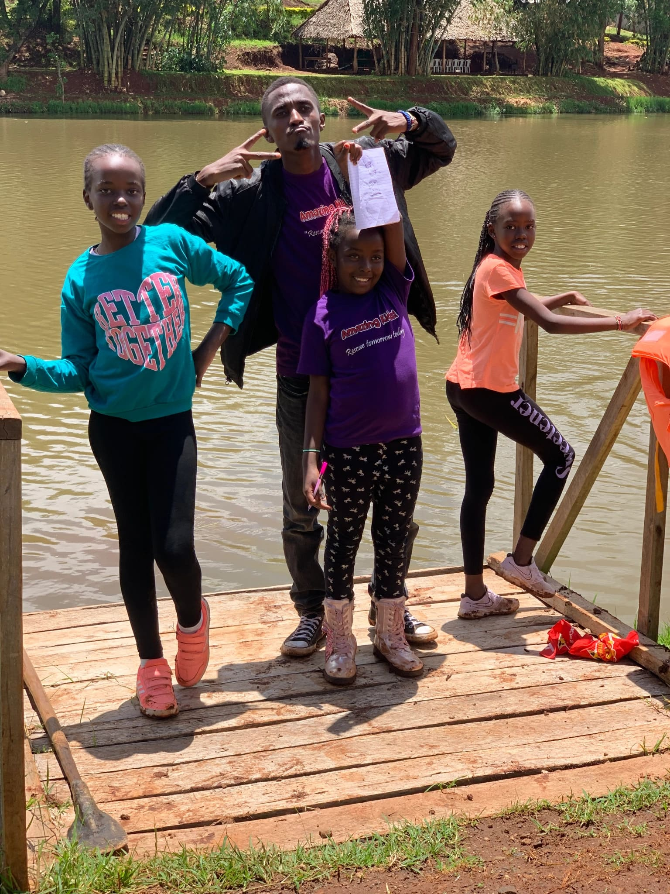
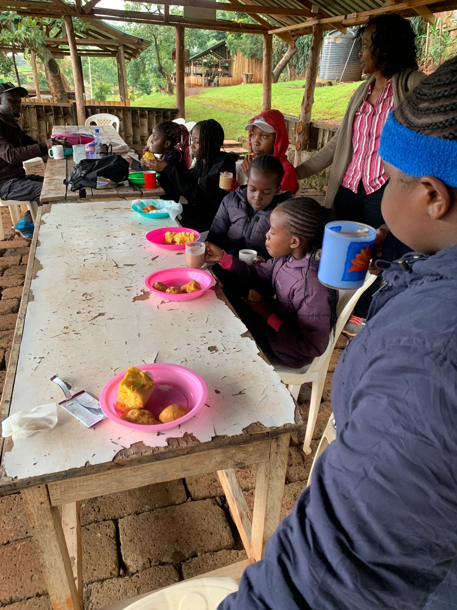
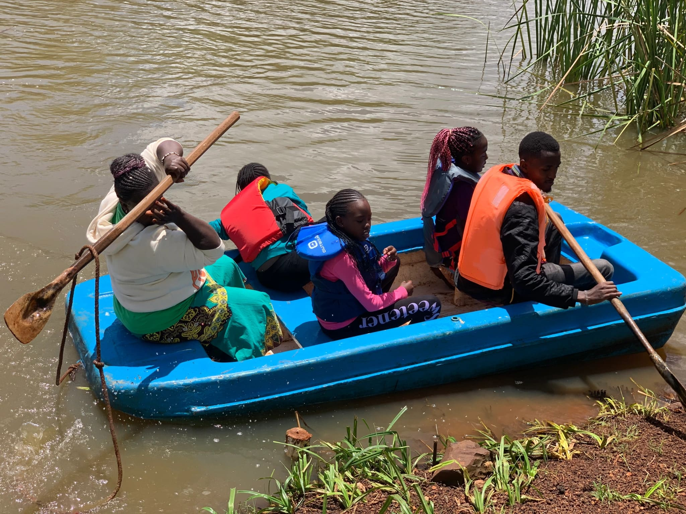
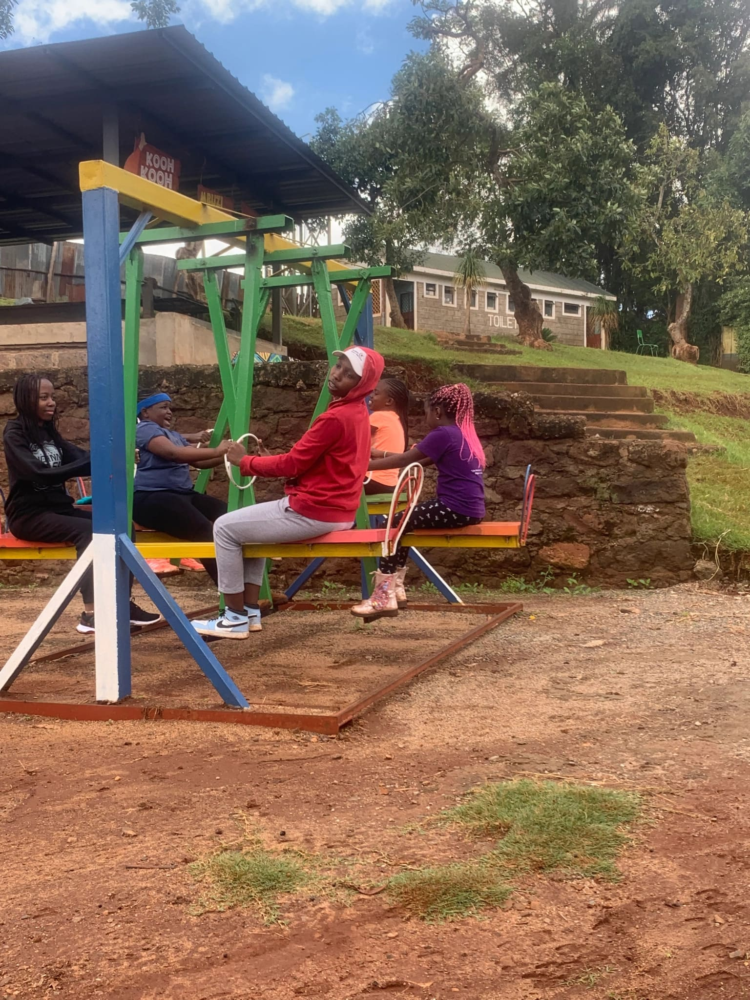
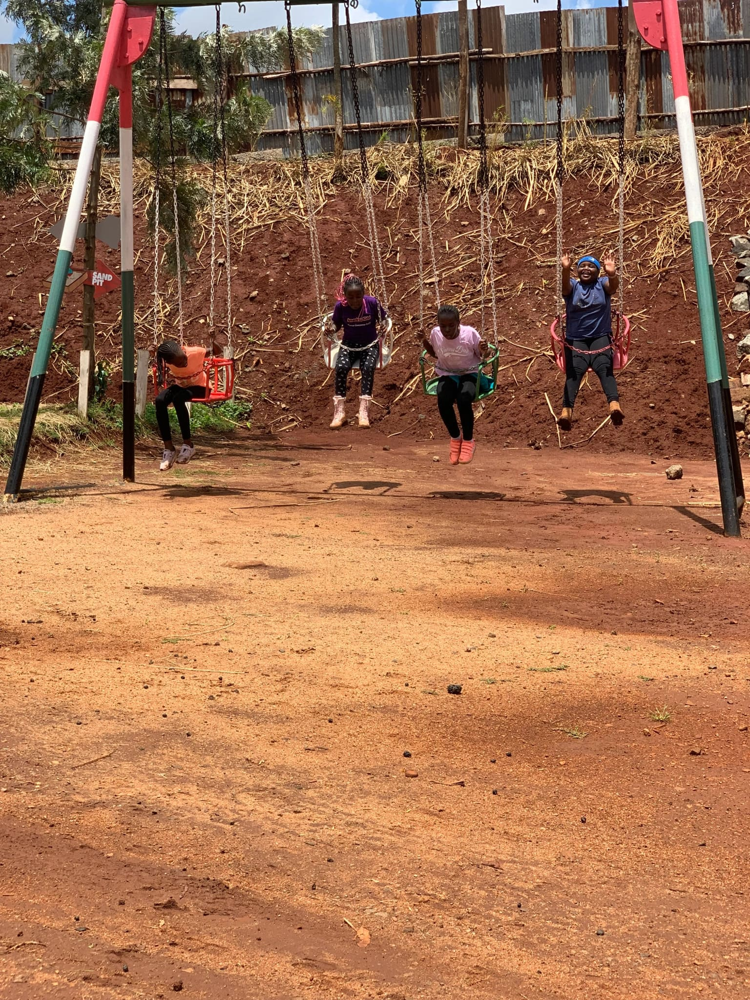

Howdy!! Good people and happy new month to you. We are half way through the year and we thank God for this far.
As one of our ice-breakers we went for a trip to evergreen Park. Evergreen park is on Kiambu rd, Nairobi Kenya. We met at Parklands Sports club at 8;00am.It was a very rainy and gloomy morning and we did not know the state we would find the grounds.
We hoped onto the bus and started our journey. It was a very short and fun drive. We sang and had a mini song battle between our teachers who call themselves “Oldie”s and us the young ones. We honestly could not relate or sing along to some of their old songs haha!
We got to evergreen park and the view was breathtaking, the air was fresh and light . There is a dam in the middle of the park. A number of small gazebos for groups to meet and share. We went into our gazebo and settled down. We shared the word of God and then had some tea and snacks. Somehow food is always yummy when you eat together with friends. We really enjoyed tea.
After tea we went down and played some games. We really enjoyed playing ,Wall,Hare, Arrow and my team won!! Later we made our way to the dam where we were to go for boat riding. The ride was fantastic. We shared stories and sang ” Row your Boat” amongst us as we cruised in the waters.
We were supposed to go for horse riding but the horse was not in a jolly mood. He kept shaking his head and making angry noises towards us. We were advised by his caretaker that it wouldn't be a good idea to ride him while he was in such an angry mood. That is still on our to do list since we did not get to do it that day.
Our teachers were such a great sport because they joined us in all the activities we did. The playing, running,singing,and cracking jokes. We really had so much fun and I cannot wait for the next trip.